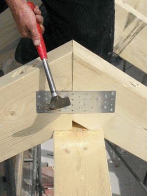

können zu gesundheitlichen Problemen führen wie
Solche Tätigkeiten sind z. B.
Nach Unterbrechung der Belastung durch andersartig belastende Tätigkeiten bzw. Einlegen einer Minipause wird die Ermüdung der Muskulatur aufgehoben und die volle Leistungsfähigkeit wieder erreicht.